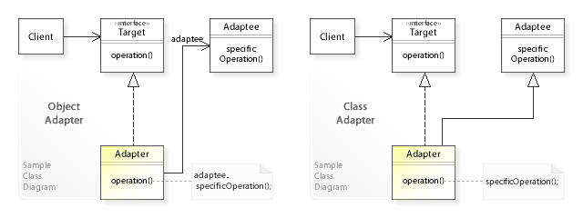
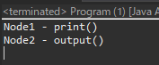
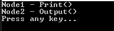

[Design pattern] 2-1. アダプターパターン(Adapter pattern)
こんにちは。明月です。
この投稿はデザインパターンのアダプターパターン(Adapter pattern)に関する説明です。
アダプターパターンからは構造パターンです。構造パターンとは様々なクラスやオブジェクトを組み合わせてもっと大きい構造を作るパターンです。以前の生成パターンはnewキーワードを利用してインスタンスを生成する型がメインだったら、構造パターンはクラスやオブジェクトの構造をどのように構成するかをメインに考えるパターンです。
アダプターパターンはインターフェースに連結されてない他のクラスを同じインターフェースの型に変換することが目標です。

Reference - https://en.wikipedia.org/wiki/Adapter_pattern
#pragma once
#include <stdio.h>
#include <iostream>
#include <vector>
using namespace std;
// INodeインターフェース
class INode {
public:
// 抽象関数
virtual string getData() = 0;
// デストラクター抽象
virtual ~INode() { }
};
// INodeインターフェースを継承する。
class Node1 : public INode {
public:
// getData関数を再定義
virtual string getData() {
// Stringデータをリターンする。
return "Node1 Class - getData()";
}
};
// Node2クラス、INodeインターフェースを継承しなかった。
class Node2 {
public:
// getData関数
string getData() {
// Stringデータをリターンする。
return "Node2 Class - getData()";
}
};
// Node2クラスのアダプターパターン(Node2がINodeインターフェースの中で使えるようにする。)
class Node2Adapder : public INode {
private:
// メンバー変数
Node2* node;
public:
// コンストラクタ、Node2のインスタンスを受け取る。
Node2Adapder(Node2* node) {
// メンバー変数設定
this->node = node;
}
// デストラクター
~Node2Adapder() {
// メンバー変数のNode2をメモリから解除する。
delete this->node;
}
// getData関数を再定義
virtual string getData() {
// Node2インスタンスのgetDataを呼び出す。
return this->node->getData();
}
};
// 実行関数
int main() {
// ベクトル宣言(INodeインターフェースを継承したインスタンスだけ。)
vector<INode*> v;
// Node1はINodeを継承したのでOK
v.push_back(new Node1());
// Node2はINodeを継承してないが、AdapterパターンでINodeインターフェースに含ませる。
v.push_back(new Node2Adapder(new Node2()));
// 繰り返しでINodeインスタンスを取得
for (INode* n : v) {
// getDataデータを呼び出してコンソールに出力
cout << n->getData() << endl;
// メモリ解除
delete n;
}
return 0;
}
上の例をみれば私がmain関数でINodeインターフェースタイプのインスタンスをvectorを使って格納するため、宣言しました。
でも、Node2クラスはINodeインターフェースを継承したクラスではないので、INodeインターフェースグループに格納することができません。クラス構造は似てますが。。。
Node2をINodeから継承したら簡単に解決するかも知れませんが、状況によりNode2クラスを修正したらダメなら上みたいにAdapterクラスを作成してNode2クラスをINodeインターフェースから継承したらしく使えます。
import java.util.ArrayList;
// INodeインターフェース
interface INode {
// 抽象関数
void print();
}
// INodeAnotherインターフェース
interface INodeAnother {
// 抽象関数
String output();
}
// INodeインターフェースを継承したNode1クラス
class Node1 implements INode {
// 関数再定義
public void print() {
// コンソールに出力
System.out.println("Node1 - print()");
}
}
// INodeAnotherインターフェースを継承したNode2クラス
class Node2 implements INodeAnother {
// 関数再定義
public String output() {
// String値をリターン
return "Node2 - output()";
}
}
// INodeAnotherインターフェースのadapterパターン、INodeインターフェースを継承
class INodeAnotherAdapter implements INode {
// メンバー変数
private INodeAnother node;
// コンストラクタ
public INodeAnotherAdapter(INodeAnother node) {
this.node = node;
}
// 関数再定義
public void print() {
// INodeAnotherインターフェースのoutput関数の値を受け取って出力
System.out.println(node.output());
}
}
public class Program {
// 実行関数
public static void main(String[] args) {
// INodeのリスト生成
var list = new ArrayList<INode>();
// Node1インスタンス生成して格納
list.add(new Node1());
// Node2インスタンスをINodeAnotherAdapterクラスを通って変換して格納
list.add(new INodeAnotherAdapter(new Node2()));
// 繰り返しの抽出
for (var node : list) {
// print関数を呼び出す。
node.print();
}
}
}

Adapterパターンが必ずクラスだけ使うことではありません。上みたいにInterfaceアダプタークラスを作成してINodeAnotherから継承したクラスはINodeインターフェースを化粧したアダプタークラスに変換することが可能です。
using System;
using System.Collections.Generic;
// INodeインターフェース
public interface INode
{
// 抽象関数
void Print();
}
// Node2クラス
public class Node2
{
// String値をリターンする関数
public string Output()
{
return "Node2 - Output()";
}
}
// INodeインターフェースを継承したNodeクラス
public class Node1 : INode
{
// 出力関数
public void Print()
{
// コンソールに出力
Console.WriteLine("Node1 - Print()");
}
}
// 継承でAdapterパターンを実装
public class Adapter : Node2, INode
{
// 関数再定義
public void Print()
{
// コンソールに出力
Console.WriteLine(base.Output());
}
}
class Program
{
// 実行関数
static void Main(string[] args)
{
// INodeのリスト生成
var list = new List<INode>();
// Node1クラスのインスタンスを生成
list.Add(new Node1());
// Node2クラスを継承したAdapterクラスを通ってAdapterパターンを実装
list.Add(new Adapter());
// 繰り返しの抽出
foreach (var node in list)
{
// 関数を呼び出す。
node.Print();
}
// 任意のキーを押してください
Console.WriteLine("Press any key...");
Console.ReadKey();
}
}

アダプターパターンは基本的にコンストラクタでタイプを変更しようと思うクラスのインスタンスを受け取って新しいクラスで包むことです。
でも、必ずコンストラクタでインスタンスを受け取ることではなく、上みたいに継承を利用してアダプターパターンを実装することができます。
ここまでデザインパターンのアダプターパターン(Adapter pattern)に関する説明でした。
ご不明なところや間違いところがあればコメントしてください。
- [Design pattern] 3-2. 責任の連鎖パターン(Chain of responsibility pattern)2021/11/04 19:27:58
- [Design pattern] 3-1. ストラテジーパターン(Strategy pattern)2021/11/03 18:38:52
- [Design pattern] 2-7. ファサードパターン(Facade pattern)2021/11/02 19:32:31
- [Design pattern] 2-6. プロキシパターン(Proxy pattern)2021/11/01 19:42:44
- [Design pattern] 2-5. フライウェイトパターン(Flyweight pattern)2021/10/29 19:48:27
- [Design pattern] 2-4. デコレーターパターン(Decorator pattern)2021/10/28 20:11:13
- [Design pattern] 2-3. ブリッジパターン(Bridge pattern)2021/10/27 20:32:21
- [Design pattern] 2-2. コンポジットパターン(Composite pattern)2021/10/27 20:30:54
- [Design pattern] 2-1. アダプターパターン(Adapter pattern)2021/10/26 19:12:40
- [Design pattern] 1-5. プロトタイプパターン(Prototype pattern)2021/10/22 19:35:45
- [Design pattern] 1-4. デザインパターンの抽象ファクトリーパターン(Abstract factory pattern)2021/10/15 19:31:03
- [Design pattern] 1-3. ファクトリーメソッドパターン(Factory method pattern)2021/06/23 19:45:37
- [Design pattern] 1-2. ビルダーパターン(Builder pattern)2021/06/11 19:06:28
- [Design pattern] 1-1. シングルトンパターン(Singleton pattern)2021/06/09 19:40:05
- [Design Pattern] デザインパターンの紹介2021/06/08 20:42:36
- [Java] Redisデータベースを接続して使い方(Jedisライブラリ)2022/02/16 18:13:17
- [C#] Redisのデータベースを接続して使い方2022/02/15 18:46:09
- [CentOS] Redisデータベースをインストールする方法とコマンドを使い方2022/02/14 18:33:07
- [Design pattern] 3-6. ステートパターン(State pattern)2021/11/17 20:04:47
- [Design pattern] 3-5. メメントパターン(Memento pattern)2021/11/16 20:01:36
- [Design pattern] 3-4. イテレータパターン(Iterator pattern)2021/11/15 19:31:28
- [CentOS] Linux環境(CentOS)でCassandra(NoSQL DB)をインストールする方法(DBeaverブラウザでNoSQL使い方)2021/11/12 17:33:58
- [Design pattern] 3-3. コマンドパターン(Command pattern)2021/11/05 17:01:42
- [Window] apache-tomcatでロードバランシング(Load balancing)する方法とセッションクラスタリング（セッション共有）2021/11/05 16:58:45
- [Window] Apacheでmod_jkとmod_proxyの差異、apacheでtomcatのwebsocketのプロキシフォーワードする方法2021/11/05 16:55:05
- [PHP] Apache環境の同じホスト中でPHPとJava(Servlet)を同時に起動、運用する方法2021/11/05 16:52:04
- [C#] 61. ウィンドウフォーム(Window form)でスレッド(Thread)を使い方、クロススレッド問題解決2021/11/04 19:29:51
- [Design pattern] 3-2. 責任の連鎖パターン(Chain of responsibility pattern)2021/11/04 19:27:58
- [Design pattern] 3-1. ストラテジーパターン(Strategy pattern)2021/11/03 18:38:52
- [C#] 60. ウィンドウフォーム(Window form)のイベント設定する方法2021/11/02 21:18:08